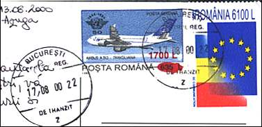

Introduction to Inflation
|
|
The results of the suicidal politics of the former Communist leaders and of some of their later followers can still be perceived today, even on stamps. Take as an example the stamp displayed on the left (Sura Dacilor Lodge, Brasov, Scott 4219). True, it may look better in the overprinted version of 1998 than the original of 1991, but notice the inflation rate of over 5500%, and the quite suggestive image of the archer who tries, unsuccessfully, to hide the old value. My only objection to the design of the overprint is that the archer should be pointing much higher than the roof! |

|
|
In the Feb. 1999 edition of Scott Stamp Monthly, the stamp above appeared with the very suggestive caption: "Stamps that need all the help they can get". (p. 107). Another example is the stamp Abies Alba, issued in 1994 and recently overprinted, where the red overprinted rabbit makes a jump from 15L to 4150L (a 27700% increase, or over 5000% per year). Here the rabbit could eventually be replaced by a hawk. |

|
I present on the right an interesting combination of Romanian stamps, received on a postcard. The Airbus A-310 stamp was issued in 1994 and was recently overprinted with a dirigible airship, possible in the hope of a slow down of inflation. The control of inflation is a precondition set by the European Union for the countries that wish to join it, and, by chance, the stamp on the right shows the flags of Romania and of the European Union. |
 |
| Notice that the postcard took 5 days to travel from Azuga to Bucharest (130 Km or 78 miles) and other 5 days from Bucharest to Switzerland (about 1500 Km). The first part of the travel was eventually made on the board of a really slow airship... |
Link: Inflation Records